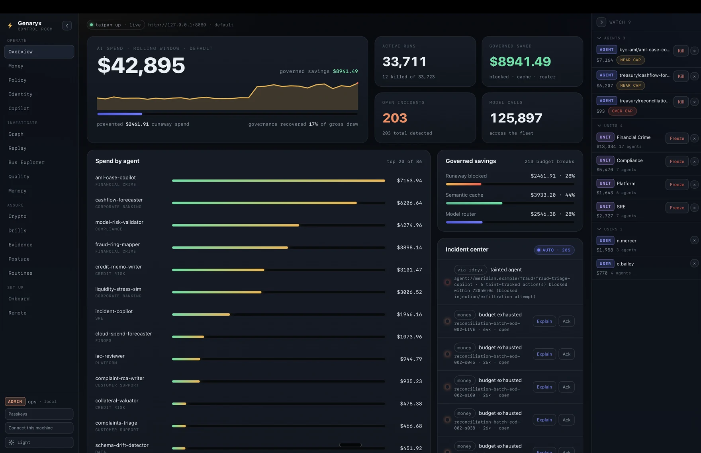
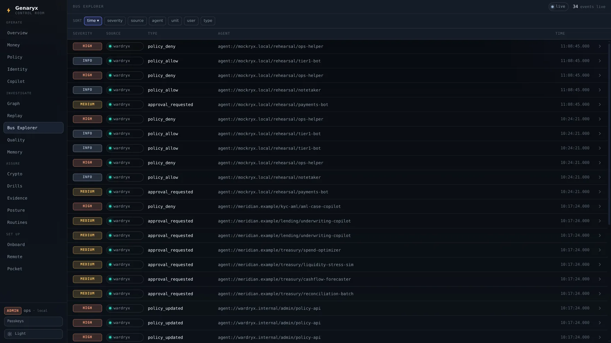
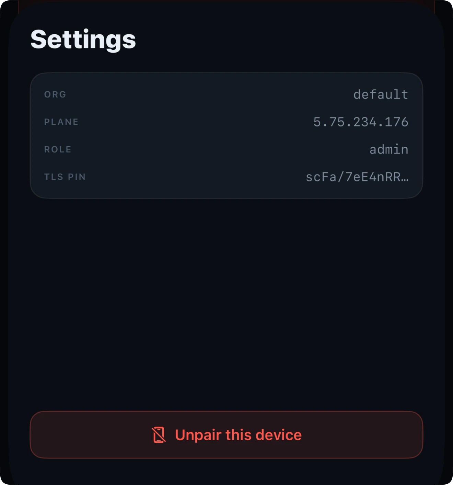

The seven open services each govern one plane of an agent fleet. Genaryx is the paid, closed desktop console we are building on top of them for companies that run real fleets: money, policy, identity, quality, crypto, memory, drills and evidence in one window, a kill switch signed by hardware, remote reach over its own WireGuard tunnel, an iPhone and Watch pager, and Felyx - a local-first AI copilot that can read everything and touch nothing. Self-hosted on infrastructure you own, any cloud or on-prem: your plane, your data, our software.
Everything the stack does today - metering, policy, identity, quality, memory, drills, evidence - is Apache-2.0 and stays that way, bug fixes and security fixes included. Genaryx does not take any of it away; it is the room built on top, for teams that want one pane of glass, hardware ceremonies and a pager instead of seven dashboards and a terminal. And every screenshot on this page is the real app against a live plane, not a mockup: a fictional tier-1 bank, meridian.example, run on real infrastructure.
You can stand up the open stack's live services yourself in one command, and plenty of teams should. Genaryx exists for the moment the fleet stops being a side project: when the person on call is not the person who built it, when an auditor asks for proof, when 2am happens.
| The open stack, by hand | Genaryx | |
|---|---|---|
| One place to look | Per-service dashboards, curl, logs | 16 live tabs over one Rust core |
| Killing a runaway | A curl with an admin key | Touch ID + a typed reason: a break-glass ceremony, Secure Enclave-signed, journaled |
| Reaching a private plane | SSH tunnels you babysit | The app raises its own WireGuard tunnel; the control plane never faces the internet |
| On call at 2am | Laptop, VPN, luck | iPhone + Watch pager through a hardened relay; kill from the wrist |
| When something is off | You read six dashboards | Felyx explains it across planes with cited ids - and can only propose, never act |
| Proving it to an auditor | Exports from each service | One signed evidence pack: EU AI Act, SR 11-7, SOC 2 mappings built in |
| Where your data lives | Your infrastructure | Still yours: AWS, GCP, Hetzner and other clouds, or on-prem |
The actual macOS build against a live plane: $4,671 of governed spend across 9,501 runs and 37,596 model calls, 180 open incidents, 15 runs killed. Pick a tab on the left; click any screenshot to enlarge it, the same way the architecture schematics work everywhere else on this site.

Genaryx Bus is the always-on menu bar companion. The fleet's governed spend ticks live next to your clock; open it and you get active runs, the last runaway by name, and what it just cost. The red line is a real control: Kill last runaway carries the same hardware-signed ceremony as the big app - it just spares you opening it.
It reads the same genaryx-core over UniFFI the console does, so the number in your menu bar, the number on the Overview wall and the number in the audit trail are the same number. Overspend shows up where your eyes already are: no browser, no tab, no dashboard fatigue.

Pairing the phone and the watch to your TokenFuse data is an Enterprise capability: a 24/7 relay runs beside your firewalled Cloud holding a read-only viewer key, forwards device-signed kills verbatim - it structurally cannot mint one - and pushes the moment a run crosses its cap, so the wrist is the first thing that knows. The screens below are real screenshots of the running app, captured in the same frozen moment as the console above; the tour advances itself, or click a step.
The relay lives on your infrastructure and serves its own certificate, so there is no public authority to ask about it and nothing to buy. The QR you scan carries that certificate's SPKI-SHA256 fingerprint alongside the pairing code, and the phone keeps it. From then on it accepts that key and refuses every other one, including a perfectly valid certificate from a perfectly reputable authority.
That is stricter than ordinary TLS, not looser. A normal client trusts several hundred authorities and anything they sign; this trusts one key and aborts the pairing on a mismatch, before a token is ever handed over. The device shows you what it is pinned to, so the check is yours to make rather than ours to claim: org, plane, role, and the first characters of the pin itself.

Felyx is the fleet's analyst. It answers money questions with numbers pulled by tools, chains an incident across money, identity, policy and memory into a root cause with cited ids, drafts the kill you were about to write, and annotates the page that wakes you. It is also an AI we can honestly ask you to trust, because the trust is structural, not a system prompt.
Out of the box Felyx talks to a model on your own hardware: Ollama, LM Studio, vLLM - any OpenAI-compatible endpoint on localhost or your private network. A residency gate refuses any other destination, so a sensitive install cannot leak a prompt or a number by misconfiguration.
An operator can explicitly opt into a bring-your-own-key cloud model - Anthropic or OpenRouter - per install, in config, off by default. The app's residency banner always states which mode you are in; there is no silent fallback.
Every figure in an answer comes from a typed read tool over the same connectors the tabs use. The model does not do arithmetic in prose, and when a plane is not configured Felyx says what it cannot see instead of inventing it.
The copilot crate has no dependency on the signing crate, and a build-time test asserts it stays that way. A proposal becomes action only through the same Touch ID ceremony a human uses; the audit trail reads “human approved copilot proposal”, never “copilot did it”.
In the relay, the hard floor is deterministic code: an over-cap or runaway event pushes immediately, before any model is called. Felyx may only add a short annotation inside a strict time budget. A slow, wrong or absent model changes nothing about whether you get paged.
Felyx's own LLM calls route through TokenFuse under their own run id, so the assistant that watches your budgets has a budget: visible, cappable, killable. The thesis, dogfooded.
The console reaches a client-hosted Cloud over a WireGuard tunnel it raises itself, so the control plane never faces the internet. The pager reaches it only through a relay that can read and forward but not act. And Felyx sits beside both with no signing key at all.
A native SwiftUI app for macOS and a Tauri 2 app for everything else, both thin skins over one shared Rust core bridged by UniFFI. The logic - stores, connectors, ceremonies, the graph - is written once and tested once; the shells stay honest by construction.
Kills and budget changes are ES256-signed by the Secure Enclave behind Touch ID, with a typed break-glass reason journaled next to the signature. A stolen laptop session or a compromised server cannot forge an order.
The console bundles wireguard-go and raises its own tunnel: generate a keypair, exchange with the box, handshake, done. Your control plane answers on a private address and nowhere else. SSH stays for ops; the console does not need it.
The pager's relay holds a read-only viewer key, binds to exactly one device, pins its TLS identity into the pairing QR, and forwards device-signed mutations byte-for-byte. Compromise the relay and you can watch: you still cannot kill, budget or grant.
Licenses are offline entitlement files signed with ML-DSA, the NIST post-quantum standard. No license server, no phone-home: it works in an air-gapped room, which is exactly where some of this software will live.
We never run your Cloud plane or hold your data. The plane and relay live on infrastructure you own - AWS, GCP, Hetzner, any cloud or on-prem - reached only over WireGuard. Nothing to subpoena or breach on our side.
The console has driven a real fleet over its own WireGuard tunnel and put a hardware-signed kill through it, against a plane closed to the internet. The pager has killed a run from a wrist. Felyx has run against a live model and found the one run still over its cap that nothing had killed, on a fleet of 9,501. Every claim above has a captured run behind it.
Packaging, notarization, the licensing flow, pricing: none of it is public, and we are not promising dates. When Genaryx ships, it will show up here first. Until then the stack underneath is open today - run its live services locally in one command and watch the same planes fill with your own numbers.